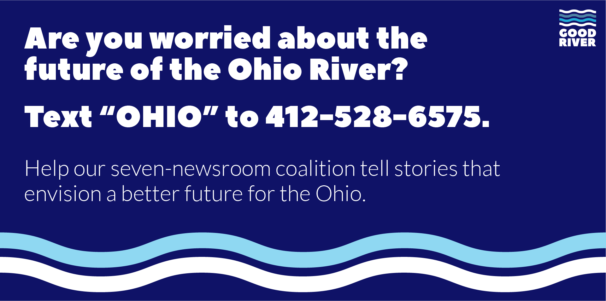

Dave Watkins lives on Wheeling Island, the most populated island along the Ohio River.
In the early 1800s, it was referred to as the “garden spot of Wheeling,” perhaps because its rich topsoil yielded verdant plants and lush gardens. Today, the West Virginia island isn’t necessarily thought of as farmland. Instead, its neighborhoods are full of historic Victorian and working-class homes; most have weathered centuries of flooding. But in an area troubled by drugs, 58-year-old Dave has turned a small vacant plot into a peaceful spot for beekeeping and gardening.
“Beekeeping has been something I've done for all my life,” Dave says. “I will probably do it until the day I die. It’s one of those things that gets in your blood and once it's in your blood, it's hard to shake it.”
He acquired his plot on the island after the passing of two neighbors who he’d spent years caring for — Libby in 2015 and her daughter Mary in 2018. In 2014, he’d convinced Libby and Mary to turn their empty yard into the gardens that have helped support him financially and emotionally ever since. He, in turn, provided the two women fresh vegetables grown on the land.
The rest of the produce was sold at farmer’s markets, which provided enough of an income that Dave was able to transition out of a traditional 9-to-5 job. He has worked in everything from pest control to agriculture to commercial painting; he refers to himself as a jack of all trades. Within the last year, he converted the plot from vegetables to fruit, which Dave says are easier to maintain as he ages. They are establishing a pick-your-own berry patch, where they will sell berries by the pound to people living in the economically struggling community.
“We didn't do the garden thing to try to improve the community, but we get a lot of people come by and say how we’re doing such a nice job in the garden,” Dave recounts. “It’s something Wheeling Island needs.”
And it’s something he needs. It provides an income, but also a place to bond with his three children and eight grandchildren, like 4-year-old Izzy who helps pick strawberries.
While he’s dedicating the land to Libby and Mary, he will name the berry patch after his wife, Cheryl. Dave says she has taught him how to love over the years and continues to do so each and every day. Cheryl’s Berry Patch will open in 2020 for its first season.
Rebecca Kiger, the author of this story, is a documentary photographer based out of Central Appalachia (Wheeling, West Virginia). She can be reached at rebeccakphoto@gmail.com.
Good River: Stories of the Ohio is a series about the environment, economy, and culture of the Ohio River watershed, produced by seven nonprofit newsrooms. To see more, please visit ohiowatershed.org.